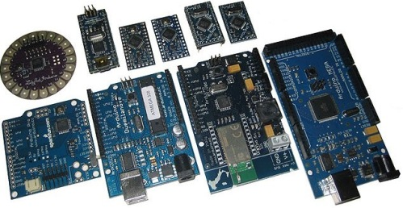
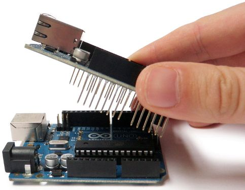
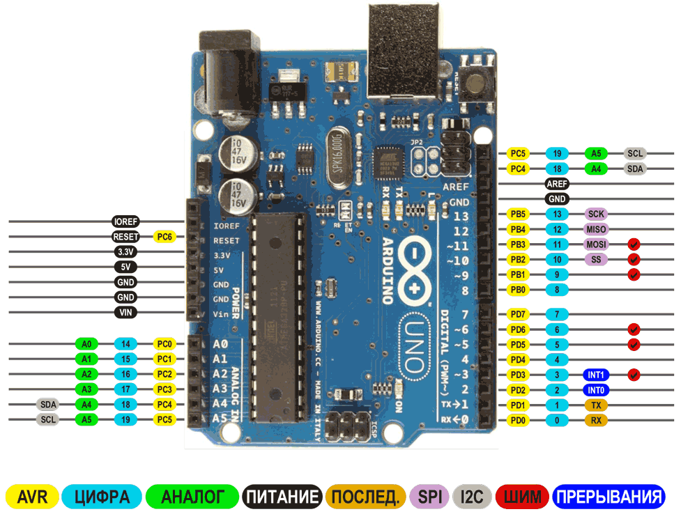
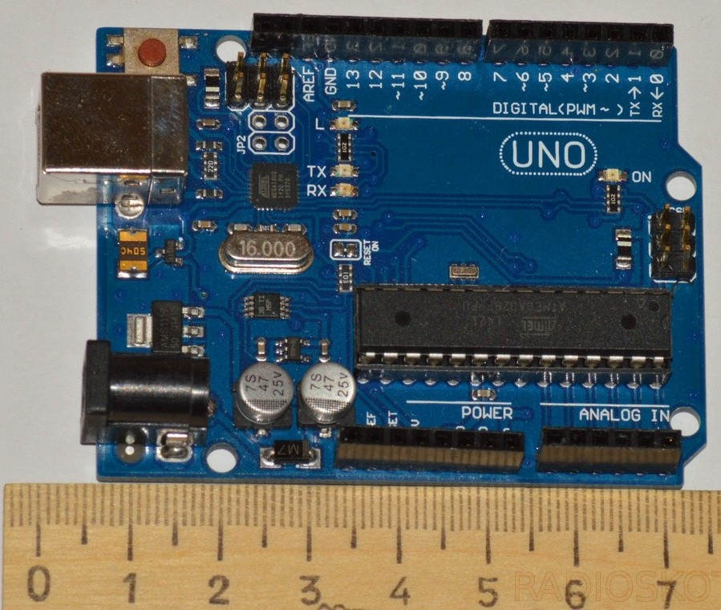
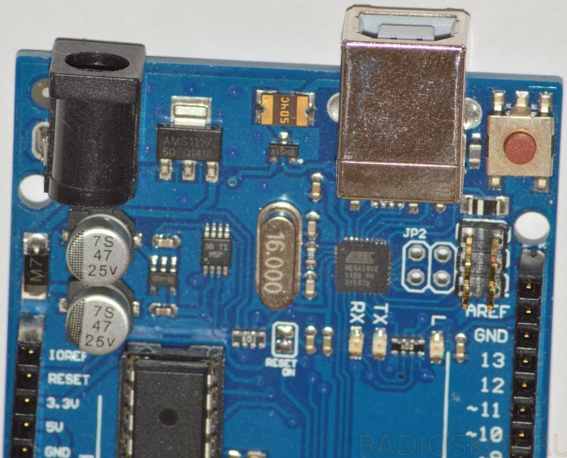
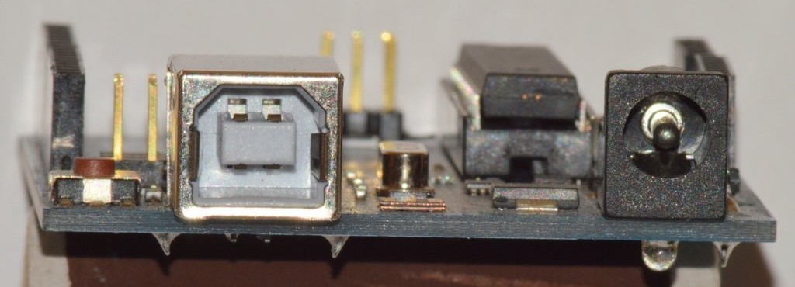
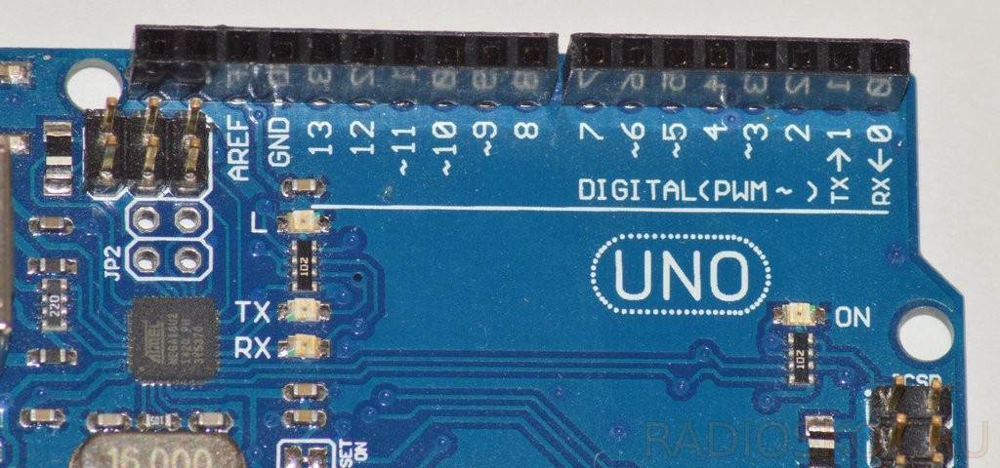
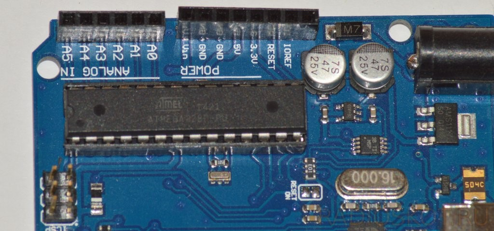
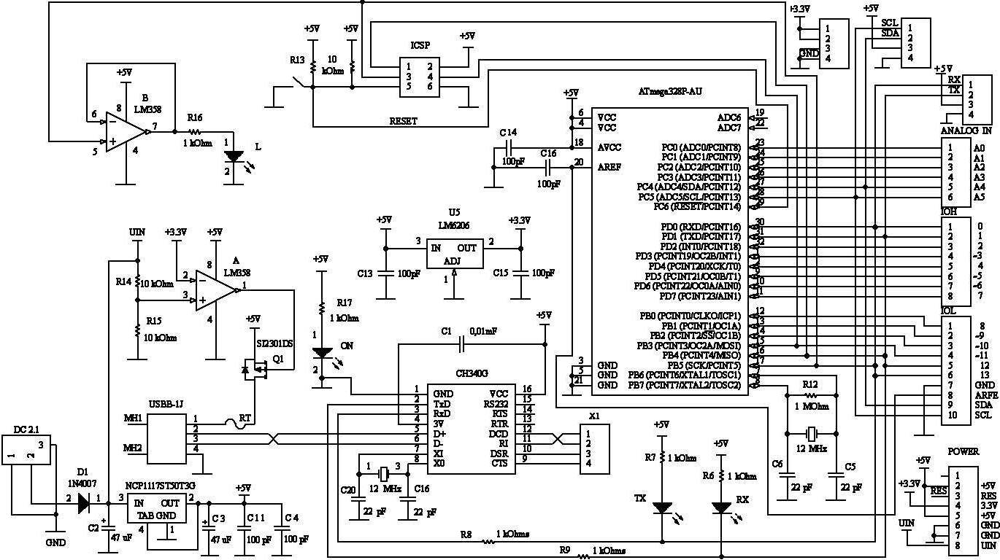

Arduino Uno
Что такое Arduino?
Это своего рода электронный конструктор. Изначальная задача проекта – это позволить людям легко обучаться программированию электронных устройств, при этом уделяя минимальное время электронной части.

Рис. 1 - Микроконтроллеры Arduino
Сборка сложнейших схем и соединение плат может осуществляться без паяльника, а с помощью перемычек с разъёмными соединениями «штырь» и «гнездо». Так могут подключаться как навесные элементы, так и платы расширения, которые на лексиконе ардуинщиков зовут просто «Шилды» (shield).

Рис. 2 - Установка платы расширения на микроконтроллер Arduino
Базовой и самой популярной платой считается Arduino Uno (рис. 3). Эта плата размером напоминает кредитную карту. Большинство шилдов которые есть в продаже идеально подходят к ней. На плате для подключения внешних устройств расположены гнезда. На современных моделях её сердцем является Atmega328.
Общие сведения об Arduino Uno
Arduino Uno контроллер построен на ATmega328. Платформа имеет 14 цифровых вход/выходов (6 из которых могут использоваться как выходы ШИМ), 6 аналоговых входов, кварцевый генератор 16 МГц, разъем USB, силовой разъем, разъем ICSP и кнопку перезагрузки. Для работы необходимо подключить платформу к компьютеру посредством кабеля USB, либо подать питание при помощи адаптера AC/DC или батареи.
Микроконтроллер на данной плате - это длинная микросхема в корпусе DIP28, что говорит о том, что у него 28 ножек.

Рис. 4 - Расшифровка функций выводов Arduino UNO (pinout Arduino Uno)
В отличие от всех предыдущих плат, использовавших FTDI USB микроконтроллер для связи по USB, новый Ардуино Uno использует микроконтроллер ATmega8U2.
"Uno" переводится как "один" с итальянского и разработчики тем самым намекают на грядущий выход Arduino 1.0. Новая плата стала флагманом линейки плат Ардуино.
| Микроконтроллер | ATmega328 |
| Рабочее напряжение | 5 В |
| Входное напряжение (рекомендуемое) | 7-12 В |
| Входное напряжение (предельное) | 6-20 В |
| Цифровые Входы/Выходы | 14 (6 из которых могут использоваться как выходы ШИМ) |
| Аналоговые входы | 6 |
| Постоянный ток через вход/выход | 40 мА |
| Постоянный ток для вывода 3.3 В | 50 мА |
| Флеш-память | 32 Кб (ATmega328) из которых 0.5 Кб используются для загрузчика |
| ОЗУ | 2 Кб (ATmega328) |
| EEPROM | 1 Кб (ATmega328) |
| Тактовая частота | 16 МГц |
Питание
Arduino Uno может получать питание через подключение USB или от внешнего источника питания. Источник питания выбирается автоматически.
Внешнее питание (не USB) может подаваться через преобразователь напряжения AC/DC (блок питания) или аккумуляторной батареей. Преобразователь напряжения подключается посредством разъема 2.1 мм с центральным положительным полюсом. Провода от батареи подключаются к выводам Gnd и Vin разъема питания.
Платформа может работать при внешнем питании от 6 В до 20 В. При напряжении питания ниже 7 В, вывод 5V может выдавать менее 5 В, при этом платформа может работать нестабильно. При использовании напряжения выше 12 В регулятор напряжения может перегреться и повредить плату. Рекомендуемый диапазон от 7 В до 12 В.
Выводы питания:
- VIN. Вход используется для подачи питания от внешнего источника (в отсутствие 5 В от разъема USB или другого регулируемого источника питания). Подача напряжения питания происходит через данный вывод.
- 5V. Регулируемый источник напряжения, используемый для питания микроконтроллера и компонентов на плате. Питание может подаваться от вывода VIN через регулятор напряжения, или от разъема USB, или другого регулируемого источника напряжения 5 В.
- 3V3. Напряжение на выводе 3.3 В генерируемое встроенным регулятором на плате. Максимальное потребление тока 50 мА.
- GND. Выводы заземления.
Память
Микроконтроллер ATmega328 располагает 32 кБ флэш памяти, из которых 0.5 кБ используется для хранения загрузчика, а также 2 кБ ОЗУ (SRAM) и 1 Кб EEPROM.(которая читается и записывается с помощью библиотеки EEPROM).
Входы и Выходы
Каждый из 14 цифровых выводов Uno может настроен как вход или выход, используя функции pinMode(), digitalWrite(), и digitalRead(). Выводы работают при напряжении 5 В. Каждый вывод имеет нагрузочный резистор (по умолчанию отключен) 20-50 кОм и может пропускать до 40 мА. Некоторые выводы имеют особые функции:
- Последовательная шина: 0 (RX) и 1 (TX). Выводы используются для получения (RX) и передачи (TX) данных TTL. Данные выводы подключены к соответствующим выводам микросхемы последовательной шины ATmega8U2 USB-to-TTL.
- Внешнее прерывание: 2 и 3. Данные выводы могут быть сконфигурированы на вызов прерывания либо на младшем значении, либо на переднем или заднем фронте, или при изменении значения. Подробная информация находится в описании функции attachInterrupt().
- ШИМ: 3, 5, 6, 9, 10, и 11. Любой из выводов обеспечивает ШИМ с разрешением 8 бит при помощи функции analogWrite().
- SPI: 10 (SS), 11 (MOSI), 12 (MISO), 13 (SCK). Посредством данных выводов осуществляется связь SPI, для чего используется библиотека SPI.
- LED: 13. Встроенный светодиод, подключенный к цифровому выводу 13. Если значение на выводе имеет высокий потенциал, то светодиод горит.
На платформе Uno установлены 6 аналоговых входов (обозначенных как A0 .. A5), каждый разрешением 10 бит (т.е. может принимать 1024 различных значения). Стандартно выводы имеют диапазон измерения до 5 В относительно земли, тем не менее имеется возможность изменить верхний предел посредством вывода AREF и функции analogReference(). Некоторые выводы имеют дополнительные функции:
- I2C: 4 (SDA) и 5 (SCL). Посредством выводов осуществляется связь I2C (TWI), для создания которой используется библиотека Wire.
Дополнительная пара выводов платформы:
- AREF. Опорное напряжение для аналоговых входов. Используется с функцией analogReference().
- Reset. Низкий уровень сигнала на выводе перезагружает микроконтроллер. Обычно применяется для подключения кнопки перезагрузки на плате расширения, закрывающей доступ к кнопке на самой плате Arduino.
Обратите внимание на соединение между выводами Arduino и портами ATmega328.
Связь
На платформе Arduino Uno установлено несколько устройств для осуществления связи с компьютером, другими устройствами Arduino или микроконтроллерами. ATmega328 поддерживают последовательный интерфейс UART TTL (5 В), осуществляемый выводами 0 (RX) и 1 (TX). Установленная на плате микросхема ATmega8U2 направляет данный интерфейс через USB, программы на стороне компьютера "общаются" с платой через виртуальный COM порт. Прошивка ATmega8U2 использует стандартные драйвера USB COM, никаких стороних драйверов не требуется, но на Windows для подключения потребуется файл ArduinoUNO.inf. Мониторинг последовательной шины (Serial Monitor) программы Arduino позволяет посылать и получать текстовые данные при подключении к платформе. Светодиоды RX и TX на платформе будут мигать при передаче данных через микросхему FTDI или USB подключение (но не при использовании последовательной передачи через выводы 0 и 1).
Библиотекой SoftwareSerial возможно создать последовательную передачу данных через любой из цифровых выводов Uno.
ATmega328 поддерживает интерфейсы I2C (TWI) и SPI. В Arduino включена библиотека Wire для удобства использования шины I2C.
Программирование
Платформа программируется посредством ПО Arduino. Из меню Tools > Board выбирается «Arduino Uno» (согласно установленному микроконтроллеру).
Микроконтроллер ATmega328 поставляется с записанным загрузчиком, облегчающим запись новых программ без использования внешних программаторов. Связь осуществляется оригинальным протоколом STK500.
Имеется возможность не использовать загрузчик и запрограммировать микроконтроллер через выводы ICSP (внутрисхемное программирование).
Автоматическая (программная) перезагрузка
Uno разработана таким образом, чтобы перед записью нового кода перезагрузка осуществлялась самой программой Arduino на компьютере, а не нажатием кнопки на платформе. Одна из линий DTR микросхемы ATmega8U2, управляющих потоком данных (DTR), подключена к выводу перезагрузки микроконтроллеру ATmega328 через 100 нФ конденсатор. Активация данной линии, т.е. подача сигнала низкого уровня, перезагружает микроконтроллер. Программа Arduino, используя данную функцию, загружает код одним нажатием кнопки Upload в самой среде программирования. Подача сигнала низкого уровня по линии DTR скоординирована с началом записи кода, что сокращает таймаут загрузчика.
Функция имеет еще одно применение. Перезагрузка Uno происходит каждый раз при подключении к программе Arduino на компьютере с ОС Mac X или Linux (через USB). Следующие полсекунды после перезагрузки работает загрузчик. Во время программирования происходит задержка нескольких первых байтов кода во избежание получения платформой некорректных данных (всех, кроме кода новой программы). Если производится разовая отладка скетча, записанного в платформу, или ввод каких-либо других данных при первом запуске, необходимо убедиться, что программа на компьютере ожидает в течение секунды перед передачей данных.
На Uno имеется возможность отключить линию автоматической перезагрузки разрывом соответствующей линии. Контакты микросхем с обоих концов линии могут быть соединены с целью восстановления. Линия маркирована «RESET-EN». Отключить автоматическую перезагрузку также возможно подключив резистор 110 Ом между источником 5 В и данной линией.
Токовая защита разъема USB
В Arduino Uno встроен самовостанавливающийся предохранитель (автомат), защищающий порт USB компьютера от токов короткого замыкания и сверхтоков. Хотя практически все компьютеры имеют подобную защиту, тем не менее, данный предохранитель обеспечивает дополнительный барьер. Предохранитель срабатыват при прохождении тока более 500 мА через USB порт и размыкает цепь до тех пока нормальные значения токов не будут востановлены.
Физические характеристики
Длина и ширина печатной платы Uno составляют 6,9 и 5,3 см соответственно. Разъем USB и силовой разъем выходят за границы данных размеров. Четыре отверстия в плате позволяют закрепить ее на поверхности. Расстояние между цифровыми выводами 7 и 8 равняется 0,4 см, хотя между другими выводами оно составляет 0,25 см.
Описание аппаратной части Arduino
Физически Arduino представляет собой небольшую печатную плату. Самой распространенной на данный момент версией является Arduino UNO с габаритами 75x55 мм.
{kind=link}

Рис. 5 - Размеры Arduino UNO
На плате располагается микроконтроллер ATMega328, этот микроконтроллер имеет 2 кб оперативной памяти и 32 кб памяти флэш-памяти для программ. Пользователю доступно несколько меньшая часть памяти программ, потому что часть памяти программ отведено под программу-загрузчик, которая управляет работой платы при загрузке в нее пользовательской программы. Платы заводского изготовления обычно поставляются уже с записанной в память программой-загрузчиком. Если отдельный микроконтроллер, программируемый на Ассемблере, достаточно легко довести до неработоспособного состояния неверными командами, то с Arduino это сделать несколько сложнее, т.к. программное обеспечение Arduino играет роль «защиты от дурака», защищая микроконтоллер от неверных действий начинающего пользователя. Кварцевый резонатор задает тактовую частоту работы микроконтроллера 16 МГц. Так же в микроконтоллере имеется внутренний кварцевый резонатор на частоту 8 МГц, но его обычно не используют.
Для связи с компьютером на плате имеется разъем USB-BF (рис. 6). На платах разных производителей в этой части возможны существенные различия (micro-USB, 9-контактный разъем COM-порта). На плате Arduino UNO установлен специальный преобразователь, поэтому подключенная к компьютеру плата, определяется как новый COM-порт. Одно из преимуществ Arduino состоит в том, что благодаря наличию программы загрузчика и возможности подключения Arduino к персональному компьютеру для ее программирования не нужен отдельный программатор.


Рис. 6 - Разъёмы ARDUINO UNO
Подключенная к компьютеру плата Arduino питается через USB-порт. Если плата используется отдельно, то необходимо подключить к плате блок питания с выходным постоянным напряжением 7-12 В, разъем питания, вероятно, типа DS-210. На плате имеется стабилизатор напряжения, поэтому к качеству питающего напряжения устройство нетребовательно. Подойдет почти любой малогабаритный блок питания. В автономных условиях подходит 9 В батарея типа «Крона», или две последовательно соединенные батареи типа 3R12 (3336).
На плате располагается 14 цифровых портов ввода-вывода, 6 из которых поддерживают широтно-импульсную модуляцию (помечены на плате знаком «~»).

Рис. 7 - Цифровые порты ARDUINO UNO
Кроме цифровых на плате есть 6 аналоговых портов. Аналоговые порты подключены в 10 битному аналогово-цифровому преобразователю, при необходимости их также можно использовать в качестве цифровых портов.

Рис. 6 - Аналоговые порты ARDUINO UNO
На плате имеются четыре светодиода – индикатор питания (обозначен, как ON), светодиод, подключенный к 13 порту (L), два светодиода индикации обмена данными через последовательный порт (TX и RX). Также на плате имеется кнопка для перезагрузки микроконтроллера.
Одним из достоинств Arduino является то, что кроме основной платы производится дополнительные платы, расширяющие возможности основного устройства. Такие платы расширения называют Shield, что дословно можно перевести как «щит» или «экран», обычно в русскоязычной литературе используется англицизм «шилд». Шилды позволяют подключать к Arduino электродвигатели, обеспечивают выход в компьютерные сети по протоколу Ethernet или WiFi, передачу информации по сети сотовой связи GSM, и выполняют многие другие функции. Для работы с такими платами существуют готовые программные библиотеки.

Рис. 7 - Схема Arduino UNO
Плата Arduino UNO хорошо подходит для отладки программ на стадии разработки и настройки конструкций. Но для множества практических приложений возможности Arduino UNO избыточны, ее размер для установки в готовые изделия может оказаться слишком большим. Кроме этого к Arduino UNO внешние устройства подключаются без пайки – с помощью разъемов. Со временем разъем может выпасть от вибрации или его контакты окислятся, что нарушит нормальный контакт, с очевидными последствиями для изготовленного устройства.
Для использования в готовых изделиях выпускаются платы ArdinoNano и ArdinoMini, они имеют меньшие физические размеры, и несколько меньшую стоимость. Эти платы совместимы программно с Arduino UNO, но не позволяют непосредственно подключать к ним шилды. ArdinoNano – плата уменьшенного размера, имеет разъем для непосредственной связи с компьютером, выводы позволяют использовать более надежное паяное соединение. ArdinoMini – еще более уменьшена, по сравнению с ArdinoNano, на плате отсутствует разъем для прямого подсоединения к компьютеру, для программирования требуется специальный переходник.
Если возможностей Arduino UNO недостаточно, можно применить расширенную версию ArdinoMega. Эта плата имеет расширенные возможности 54 цифровых порта из них 15 поддерживают ШИМ,16 — аналоговых портов, 128 кб (в поздних версиях 256 кб) — флэш-памяти для программ, 8 кб оперативной памяти.
Перечень различных вариантов аппаратной реализации Ardino этим платами не ограничивается, но подобные устройства ориентированы на специалиста достаточно высокой квалификации и для первоначального изучения подходят мало.
Основной стандарт плат Arduino, тоже изменялся со временем. Более подробно с различными версиями плат можно познакомиться на сайте разработчика. На данный момент самым современным вариантом является Arduino Leonardo. Однако на данный момент Arduino UNO распространена наиболее широко.
Надо отметить, что конструктивно Arduino не очень сложна и вполне доступна для самостоятельного изготовления, во всяком случае, если речь идет о подготовленном радиолюбителе-конструкторе. На сайте разработчика имеется вся необходимая документация для самостоятельного изготовления Arduino.
Вообще проект Ардуино полностью открытый, авторским правом охраняется только сам термин «Arduino», поэтому множество сторонних производителей выпускают свои конструкции: Freeduino, Japanino, Seeeduino, CraftDuino, Diavolino и т.п. Существуют платы, как полностью повторяющие оригинальные, так и собственные разработки, часть из которых совместима с Arduino только программно, из-за того, что платы имеют отличную конфигурацию. В целом, на современном уровне производства электронных устройств, платы Arduino не содержат в себе каких-то действительно высоких технологий, поэтому приемлемый для любителя уровень качества способны обеспечить не только производители оригинальных устройств, но и малоизвестные фирмы, которые предлагают аналогичные конструкции по существенно более низким ценам.
Если плата заявлена как копия Arduino UNO, то, скорее всего, все сказанное о Arduino UNO будет относиться и к ней, хотя конечно за конкретного китайского производителя поручиться нельзя.